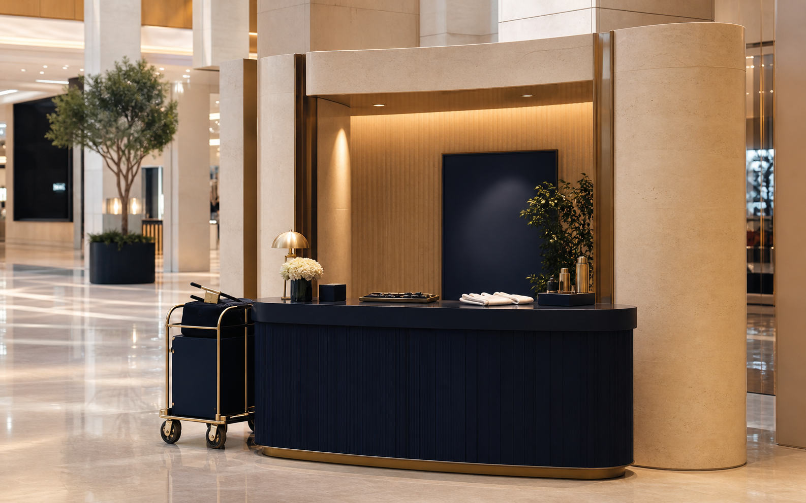
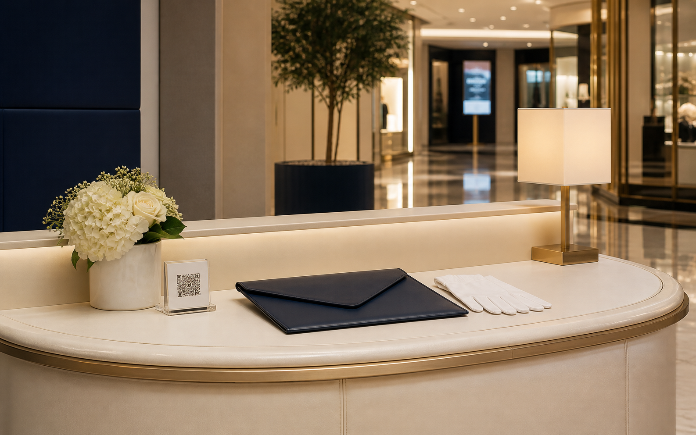
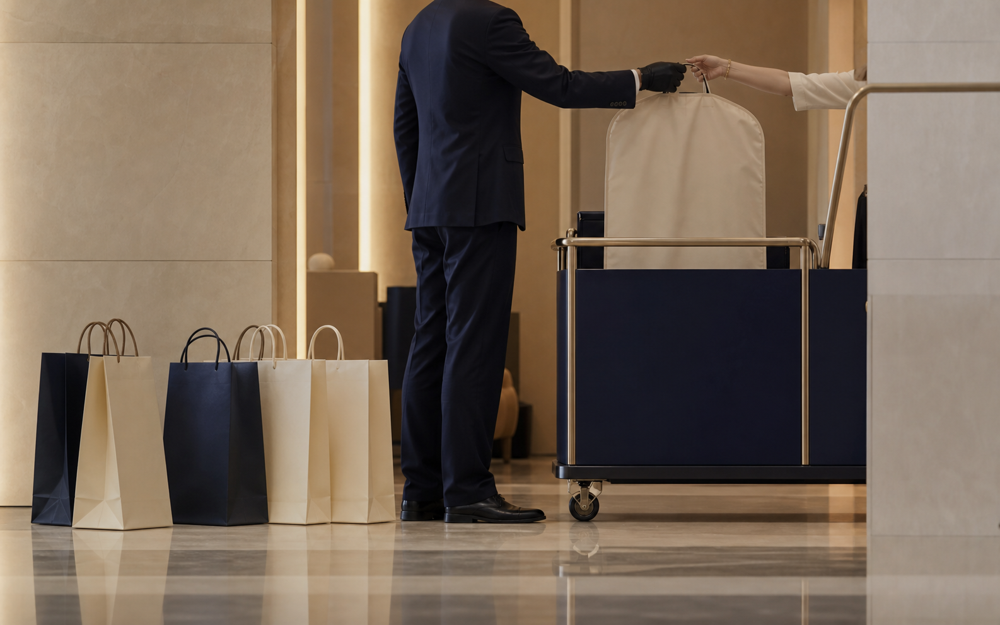
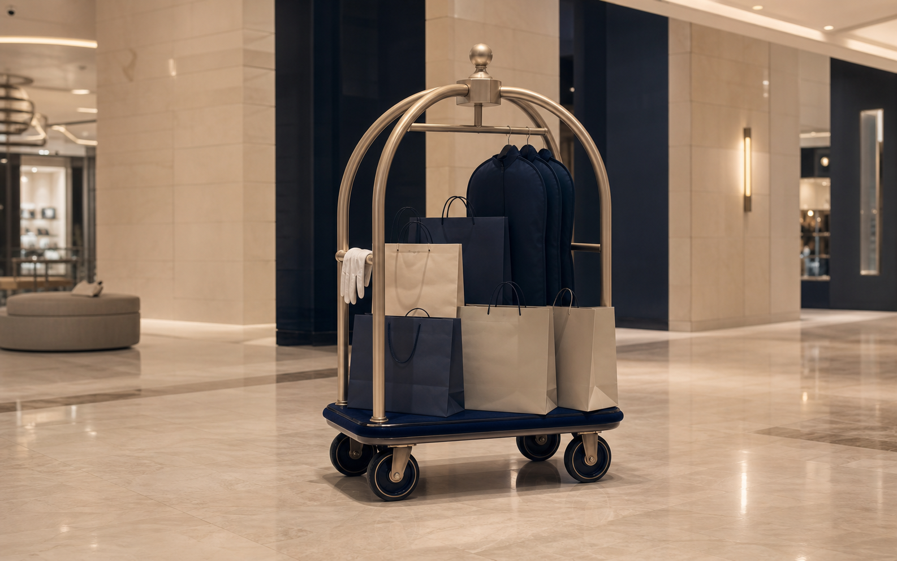
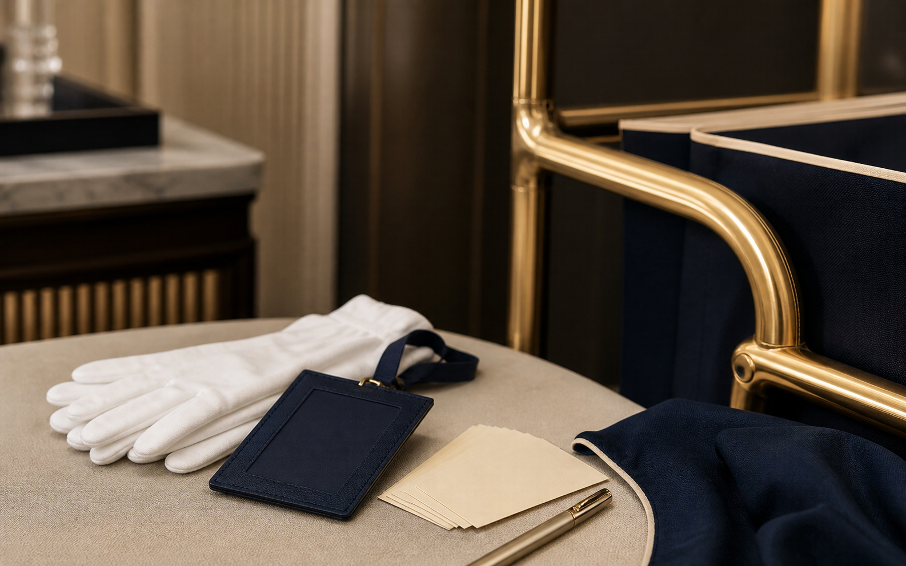
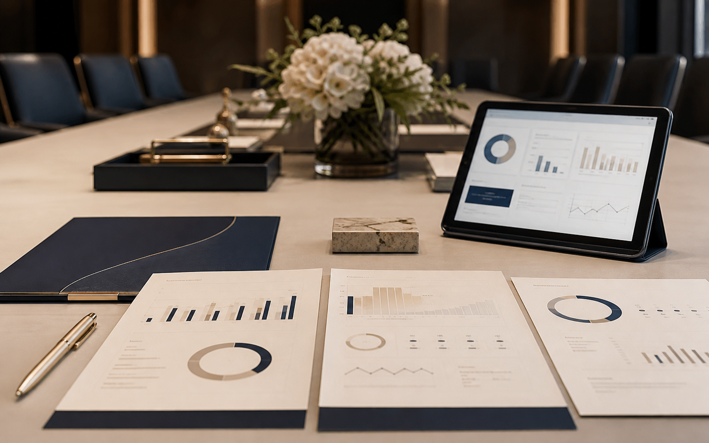

استقبال الزوار
فريق الكونسيرج يستقبل الزائر، يشرح الخدمة ببساطة، ويسجل الطلب بطريقة منظمة وسريعة.
WOSOL Concierge × Kingdom Centre

الهدف من هذه الخطة هو تقديم خدمة كونسيرج راقية وواضحة للزوار داخل مركز المملكة، بطريقة تجعل يوم الزائر أسهل وأكثر راحة وتنظيمًا، دون مبالغة أو وعود غير واقعية. الفخامة هنا ليست في الإعلان، بل في التشغيل الهادئ الذي يلاحظه الزائر عندما يحتاجه.
Strategic Vision
نريد أن يشعر زائر المملكة أن هناك جهة تهتم بتفاصيل يومه داخل المول بطريقة راقية وهادئة. وصول ستكون الجهة التي تساعد الزوار في التسوق، حمل المشتريات، التنسيق، والمرافقة الشخصية بأسلوب يشبه مستوى الضيافة في الفنادق الفاخرة.
هذه ليست حملة إعلانية صاخبة. هي خطة تجعل الخدمة واضحة، جميلة، وسهلة الاستخدام، ثم تُظهرها للناس من خلال التشغيل الممتاز والمحتوى الواقعي.
Operational Scope

فريق الكونسيرج يستقبل الزائر، يشرح الخدمة ببساطة، ويسجل الطلب بطريقة منظمة وسريعة.
الباتلرز يستلمون المشتريات وينقلونها داخل المول أو إلى السيارة أو نقطة متفق عليها.
خدمة VIP Personal Assistance للزوار الذين يريدون مرافقًا يساعدهم خلال الزيارة.
تنسيق حجوزات المطاعم، المساعدة في الطلبات الخاصة، وتشغيل خدمات الخزائن عند الحاجة.
Measurable Launch Objectives
أغلب الزوار لن يفهموا وظيفة البوث من أول نظرة. نحتاج شرحًا بسيطًا وواضحًا في المكان والمحتوى.
لا نريد أن تُفهم الخدمة كحمل أكياس فقط. نريد أن تظهر كتجربة مساعدة منظمة وراقية.
الزي، القفازات، العربة، وطريقة الحركة داخل المول يجب أن تجعل وجود وصول واضحًا ومرتبًا.
كل نقطة تواصل يجب أن تقود الزائر بسهولة إلى تجربة الخدمة، عبر QR أو البوث أو واتساب أو التطبيق.
Visitor Journey

الزائر يلاحظ البوث، الزي، والعربة الذهبية بشكل راقٍ وغير مزعج.
الموظف يشرح الخدمة بجملة بسيطة: نستطيع مساعدتك في حمل مشترياتك أو تنسيق تجربتك داخل المملكة.
يتم تسجيل الطلب، تحديد نقطة التسليم، تعيين الموظف المسؤول، ومتابعة الحالة حتى الإغلاق.
تصل المشتريات مرتبة، والتعامل يكون هادئًا ومحترفًا، فيخرج العميل بانطباع جيد قابل للمشاركة.
Daily Ground Checklist

Channel Plan Without Noise
Real Content From Kingdom Centre

“يوم داخل المملكة بدون حمل مشتريات” — قصة قصيرة من دخول العميل حتى تسليم الأكياس للسيارة.
“كيف تعمل خدمة المرافقة الشخصية؟” — شرح بسيط لخدمة VIP Personal Assistance.
“تفاصيل وصول” — لقطات للقفازات، البادج، العربة، والزي مع تعليق هادئ.
“قبل وبعد” — قبل: عميل يحمل مشتريات كثيرة. بعد: فريق وصول ينظم التجربة.
“من البوث إلى السيارة” — رحلة الطلب منذ تسجيله حتى التسليم النهائي.
“خدمة اليوم” — تعريف يومي بسيط بخدمة واحدة داخل البوث.
Launch Roadmap

تجهيز الرسائل، تدريب الفريق، ضبط طريقة الظهور، إطلاق محتوى تعريفي بسيط، ووضع QR في نقاط مختارة.
تفعيل التغطيات، نشر فيديو “A Day with WOSOL”، دعوة عدد محدود من صناع المحتوى المناسبين، ومتابعة الطلبات.
تحليل البيانات، تحسين الرسائل، تطوير شراكات داخل المملكة، ورفع جودة المحتوى بناءً على أكثر الخدمات طلبًا.
Success Measures
سنجعل وصول داخل مركز المملكة خدمة واضحة وراقية يشعر بها الزائر من أول تفاعل. سنبني الثقة من خلال التشغيل الممتاز، والظهور المنظم، والمحتوى الحقيقي، وليس من خلال وعود تسويقية كبيرة.
الفخامة الحقيقية هنا هي أن يستمتع الزائر بيومه داخل المملكة، بينما يهتم فريق وصول بالتفاصيل بدلًا عنه.